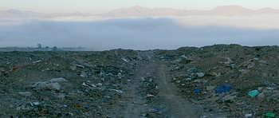
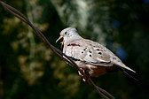
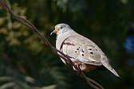
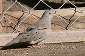
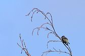
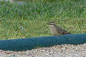
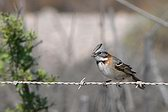
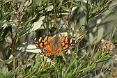

|
Presento
aquí una pequeña colección de fotos de aves que
logré durante este viaje por cuestiones laborales. Sitos
visitados: |
|
(Marca
en las fotos para ver imagen ampliada)
|
Fotos de paisajes de Copiapó (en paréntesis figura el día) |
| Vista
de Copiapó al amanecer desde la lomada al N. de la ciudad. En estas lomadas hallé las 2 dormilonas y el Yal Platero. (23) |
|
| Casi la misma vista al día siguiente - más temprano y donde se aprecia la densa niebla que cubría toda la ciudad. (24) | |
 |
Esta "fotodenuncia" es por el basural clandestino que bordea el camino de la lomada Norte, a lo largo de 2 o 3 km. La basura no esta solamente al borde del camino sinoque se ha volcado a decenas del camino, ocupando un área enorme. (24) |
| Más arriba, pasando el santuario de Lourdes, el paisaje es imponente. ¡Pero no se ve ni se escucha un sólo pajarito, de ningún tipo! (24) | |
| Regresando al valle por detrás de la montaña se vuelve a divisar la neblina, delante de las cuales resaltaban unos bonitos cerros. Al descender la niebla se había disipado rápidamente. (24) | |
| Frente a un entorno tan árido no es de extrañar que el cementerio sea frecuentado por unas cuantas avecillas. Allí había una pareja de Teros, Paloma Ala Blanca, Remolinera Común, Ratona Común y una bandadita de Diucas, ademas del siempre presente Chingolo. Volviendo al hotel vi Tenca y Torcacita Común. (22) | |
| Subiendo el valle hacia Los Loros el paisaje es bonito y extraño: la vid ocupa todo terreno más o menos plano, y sin dejar un metro de margen nacen las empinadas laderas montañosas - de pura roca y desprovistas de toda vegetación. | |
| Volvemos a la aridez! Esta fotos es del punto más alto al que llegamos tomando un camino de tierra (que parte de Piedras Blancas?) entre Tierras Amarillas y Los Loros. (23) | |
| En el desvío hallé solamente una especie: una bandada bastante numerosa de Jilguero Oliváceo. Subí una loma para tomar una foto de esta aridez 360ª a la redonda. Esta es una de ellas. (23) | |
| Un cerro en el lado Sur del rióCopiapó, que corre seco desde el 2002 a causa de la minería, el riego, y el cambio de régimen en el derretimiento de los glaciares en la alta montaña. (24) | |
|
El Desierto del Atacama es uno de los sitios más secos del mundo. Hay lugares aquí donde nunca se ha registrado lluvia - jamás. Este es el camino que regresa al aeropuerto - ¡sin un pajarito! (24) |
|
| El aeropuerto se llama muy apropiadamente "Aeropuerto del Desierto de Atacama" y esta construido en las arenas, que pude caminar por 5 minutos. Ni un pajarito, pero se encuentra diseminado con valvas de una especie de caracol terrestre. En el fondo, la torre de control. | |
| Volviendo a Buenos Aires en el segundo vuelo de la mañana, el sol de mayo intentaba asomar por sobre la cordillera, tiñendo el cielo con una bonita tonalidad amarilla. (25) |
El zoo de El Pretil me permitió fotografiar los camélidos (Guanacos, Vicuñas, Llamas y Alpacas), además de la Guayata y el Pato Crestón, especies de aves que normalmente no se encuentran en un zoológico. Entre otras cosas tienen también pumas de la montaña de chile, una leona y 3 avestruces africanas, y uno o dos Emúes.
NO PASERIFORMES
En tono granate figura el nombre utilizado en Chile (si es distinto al nombre común utilizado en Argentina)
Bandurria Austral - Theristicus melanopis - Black-faced Ibis - Bandurria
Fue muy curioso ver estas aves - normalmente de praderas húmedas - viviendo en un desierto!


Jote Cabeza Colorada - Cathartes aura - Turkey Vulture
Guayata - Chloephaga melanoptera - Andean Goose - Piuquén - (Zoo "El Pretil")


Pato Crestón o Juarjual - Lophonetta specularoides - Crested Duck- (Zoo "El Pretil")


Gavilán Mixto - Parabuteo unicinctus - Bay-winged Hawk or Harris's Hawk - Peuco


Aguilucho Común - Buteo polyosoma - Red-backed Hawk - Aguilucho
Paloma Ala Blanca - Zenaida meloda - Pacific Dove


Torcacita Común - Columbina picui - Picui Ground-Dove - Tortolina Cuyana


Tortolita Quiguagua - Columbina cruziana - Croaking Ground-Dove



Picaflor del Norte - Rhodopis vesper - Oasis Hummingbird

PASERIFORMES


FURNARIIDAE
Romolinera Común - Cinclodes fuscus - Bar-winged Cinclodes - Churrete Acanelado

TYRANNIDAE
Dormilona Gris - Muscisaxicola rufivertex - Rufous-naped Ground-Tyrant - Dormilona de Nuca Rojiza


Dormilona Chica - Muscisaxicola maculirostris - Spot-billed Ground-Tyrant


Cachudito Pico Negro - Anairetes parulus - Tufted Tit-Tyrant - Cachudito


MIMIDAE
Tenca - Mimus tenca - Chilean Mockingbird


EMBERIZIDAE
Yal Platero - Phrygilus alaudinus - Band-tailed Sierra-Finch - Platero


Diuca Común - Diuca diuca - Common Diuca-Finch


Jilguero Oliváceo - Sicalis olivascens - Greenish Yellow-Finch


Chingolo - Zonotrichia capensis - Rufous-collared Sparrow - Chincol

OTRAS AVES VISTAS PERO NO FOTOGRAFIADAS:
Garcita Bueyera, Halconcito Colorado, Tero Común, Torcaza, Paloma Doméstica
Coludito Cola Negra, Rara, Ratona Común, Zorzal Patagónico, Gorrión, un Comesebo
MAMIFEROS
Vicuña - Vicugna vicugna - Vicuña - (Zoo "El Pretil")


Llama - Lama glama - Llama - (Zoo "El Pretil")


Alpaca - Lama pacos - Alpaca - (Zoo "El Pretil")


MARIPOSAS
Nymphalidae - Vanessa carye

Portal del sitio: www.fotosaves.com.ar
Main page of this site: www.fotosaves.com.ar


{kind=link}
{kind=link}
{kind=link}
{kind=link}
{kind=link}
{kind=link}
{kind=link}
{kind=link}
{kind=link}
{kind=link}
{kind=link}
{kind=link}
{kind=link}
{kind=link}
{kind=link}
{kind=link}
{kind=link}
{kind=link}
{kind=link}
{kind=link}
{kind=link}
{kind=link}
{kind=link}